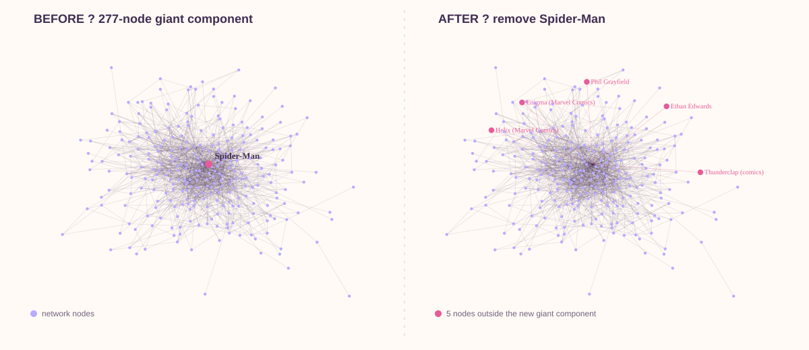

Who holds the Marvel universe together?
Spider-Man may be Marvel's biggest hub. But does removing the most connected character actually break the network?
We deleted every character — one at a time — and compared centrality, damage, targeted attacks, and a degree-preserving null model.
If one character disappears, who does the most damage?
We did not begin with a ranking. We began with a deletion.
Remove one node
The positions stay fixed so the change is structural, not a new layout trick. Pink nodes on the right are the five characters separated from the giant component after Spider-Man is removed.

How much network is there to break?
Fame is not one thing
Different measures ask different questions about the same character.
But instead of asking who looks important, we asked what happens when they disappear.
Delete one hero. What breaks?
Each character in the original giant component was removed from a fresh copy of the same graph. We then counted what fell outside the new giant component.
Figure 2. Single-node knockouts ranked by structural damage.
Spider-Man
Removing Spider-Man leaves 5 characters outside the new giant component, which retains 271 of the remaining nodes.
Being a bridge isn't the same as being irreplaceable
Betweenness and knockout damage are related, but their rankings do not tell the same story.
Figure 3. Betweenness versus single-node fragmentation, with the largest knockouts labelled.
Betweenness rank #3, but removing him leaves 0 nodes outside the giant component.
Betweenness rank #8, yet her removal leaves 3 characters outside the giant component.
What if we keep deleting heroes?
Every strategy starts from the same original giant component. Static rankings are computed once; adaptive betweenness is recomputed after every removal; random removal averages 100 runs.
Figure 4. Remaining giant-component fraction as characters are removed.
Broker — or just popular?
High betweenness is less impressive if degree already predicts it.
Figure 5. Degree versus betweenness z-score under the degree-preserving null.
Rockman
Rockman is not remarkable here because he has many links. He is remarkable because of where those links sit compared with degree-preserving rewired networks.
Three structural surprises
Most damaging single removal: 5 nodes outside the giant.
Betweenness z-score +9.55 after controlling for degree.
High betweenness, but 0 nodes outside the giant after removal.
Popularity ≠ brokerage ≠ robustness
The obvious Marvel stars dominate several centrality rankings. But deleting characters reveals something those rankings alone cannot: a bridge can be heavily used without being irreplaceable, while a modest character can occupy a position that is unusually broker-like for its degree.
The lesson is comparative. The degree-preserving null model tells us what is unusual beyond simply having many links. In this hyperlink network, “important” depends on the question we ask — and on what we compare it to.